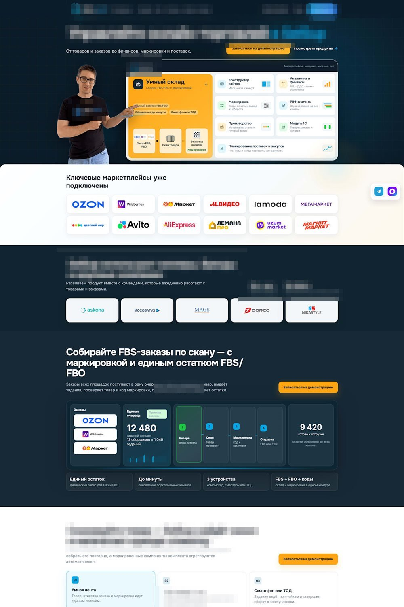
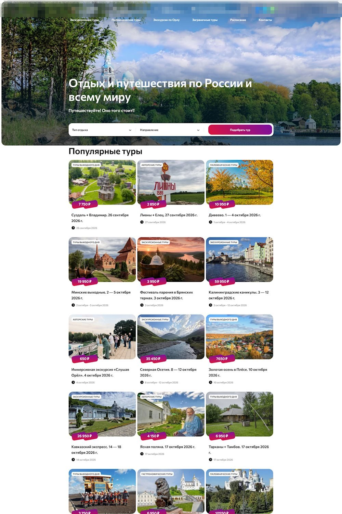
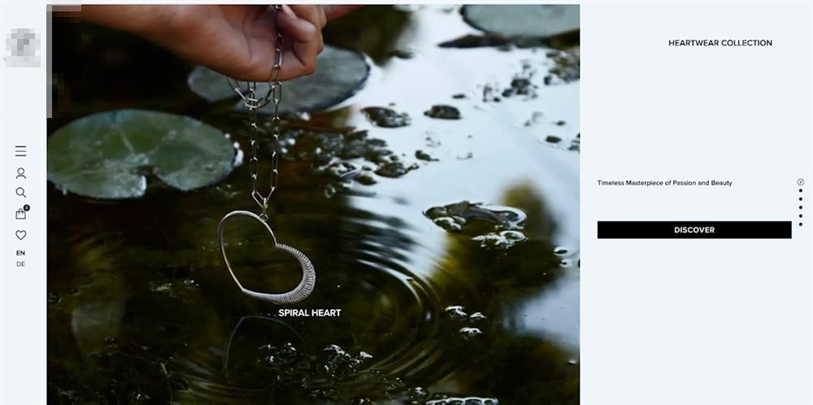

WordPress-розробник · понад 10 років
Верстка з макетів, кастомні шаблони, вивід контенту, форми й фільтри. Окремо — швидкість і технічне SEO: не звіт, а робоча частина проєкту.
Сайт компанії на WordPress. Чотири роки — повна відповідальність за фронтенд і шаблони. Назву клієнта не вказую: публікація не погоджена, деталі покажу на співбесіді.

Результат: сайт вівся без простоїв і передавався між командами без переписування з нуля.
Сайт під контент: багато напрямків, тематик і записів, які треба швидко знаходити. Назву клієнта не вказую: публікація не погоджена.

Результат: контент редагується без розробника, фільтри працюють на великому обсязі записів.
Магазин на WordPress і WooCommerce: вітрина, фільтри товарів, кошик. Назву клієнта не вказую: публікація не погоджена.

Результат: каталог і кошик працюють на мультимовній вітрині, фільтри налаштовані під асортимент.
Замовник: 704 сторінки не потрапляють у індекс Google, трафік падає.
Результат: звіт на 5 сторінок і технічний план, який замовник може віддати будь-якому виконавцю. Відкрити звіт (PDF)
Сторінка з нуля під конкретний товар — без CMS, без фреймворків, один файл.
Результат: один файл без CMS і без зовнішніх запитів — сторінка вантажиться цілком, разом зі стилями.
Part-time або регулярні задачі, 4–5 годин на день. Тільки віддалено.
Працюю за договором підряду, без ФОП — для агенцій і продуктових команд це звичайний формат. Оплата на картку або через біржу.